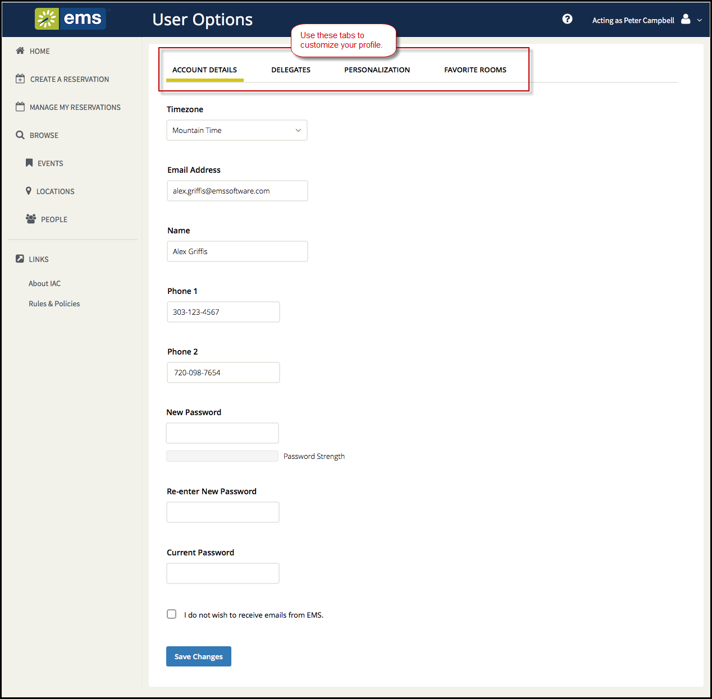

Change Account Information
Under My Account, you can change your email address, name, phone number, fax number, time zone, and password.
You can also personalize your EMS experience by setting default values for your templates and choosing favorite rooms. To further customize your account, refer to the following topics:
- Under the dropdown arrow next to your name in the upper right corner of , click My Account.

The User Options page opens, showing tabs along the top where you can customize your user profile. The Account Details tab contains basic account information.

- To modify your basic user account information:
- Modify any account information as needed—your email address, name, phone number, and so on.
If you log into and then change your email address, keep in mind that this new email address the one you must now use for logging in.
- If you want to change your password, enter a new password in the New Password field, and then enter the same password again in the Re-Enter New Password field. Lastly, enter your Current Password.
- You can click the I do not want to receive emails from EMS option (if available) to opt out of automatic emails from , such as reminders, reservation summaries (which EMS sends when you submit your reservation), and notices (which EMS sends when you modify your account).
- Click Save Changes.
- To further customize your account, refer to the following topics: